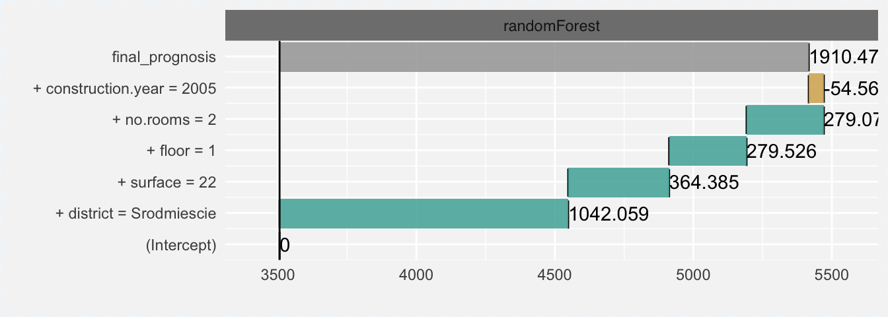

4.2 Prediction breakdown
Do your ML algorithm learn from mistakes? Understanding what causes wrong decisions may lead to model improvements.
Lots of interesting arguments and examples are presented in the (Ribeiro, Singh, and Guestrin 2016Ribeiro, Marco Tulio, Sameer Singh, and Carlos Guestrin. 2016. “‘Why Should I Trust You?’: Explaining the Predictions of Any Classifier.” In, 1135–44. ACM Press. https://doi.org/10.1145/2939672.2939778.) article. This approach for explanations of model predictions is implemented in the live package (see (Staniak and Biecek 2017Staniak, Mateusz, and Przemyslaw Biecek. 2017. Live: Local Interpretable (Model-Agnostic) Visual Explanations. https://github.com/MI2DataLab/live.)) which may be seen as an extension of the LIME method.
In this section we present other method for explanations of model predictions implemented in the breakDown package (Biecek 2017Biecek, Przemyslaw. 2017. BreakDown: BreakDown Plots. https://CRAN.R-project.org/package=breakDown.). The function single_prediction() from DALEX is a wrapper around this package.
Model prediction is visualized wirh Break Down Plots, which are inspired by waterfall plots as in xgboostExplainer package. Break Down Plots show the contribution of every variable present in the model.
Lets see which variables stand behind the prediction for observation with largest residual.
which.min(mp_rf$diff)
## 1161
new_apartment <- apartmentsTest[which.min(mp_rf$diff), ]
new_apartmentTable 4.1: Selected observation with the largest residual in the random forest model
| m2.price | construction.year | surface | floor | no.rooms | district | |
|---|---|---|---|---|---|---|
| 1161 | 6679 | 2005 | 22 | 1 | 2 | Srodmiescie |
Function single_prediction() generates variable attributions for selected prediction. The generic plot() function shows the break down plots.
new_apartment_rf <- single_prediction(explainer_rf, observation = new_apartment)
breakDown:::print.broken(new_apartment_rf)## contribution
## (Intercept) 0.000
## + district = Srodmiescie 1070.374
## + surface = 22 347.015
## + floor = 1 253.855
## + no.rooms = 2 221.732
## + construction.year = 2005 -11.349
## final_prognosis 1881.627
## baseline: 3505.213(#fig:single_prediction_break)Break down plot for prediction from the random forest model
Both the plot and the table confirm that all variables (district, surface, floor, no.rooms) have positive effects as then should have. Still these effects are too small and the final prediction is 3505 + 1881 much smaller than the observed value. Let’s see how the linear model behave for this observation.
new_apartment_lm <- single_prediction(explainer_lm, observation = new_apartment)
plot(new_apartment_lm, new_apartment_rf)(#fig:single_prediction_break2)Break down plots that compare the linear model and the random forest model

Prediction for linear model is much closer to the real price of square meter.